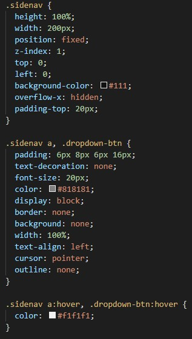
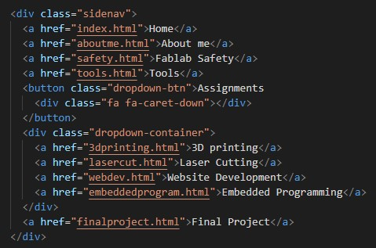
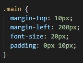
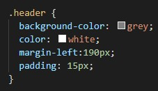

Visual Studio Code
For developing my Digifab website, I used a software called Visual Studio Code. The reason for using this instead of any other software like brackets was because I am more familiar with VSC.
Learning html code was really difficult as it was my first time coding a language like this. Especially with things like needing to create a .css file to help with formatting and making the website look overall nicer. But, with websites like W3Schools to teach me in coding html, it was enjoyable to learn it.
I will not be writing everything I have done for my website but I will document the main parts of my website.
Creating a Side Navigation Bar
Creating the side bar was definitely one of the hardest parts of making my website. I first had to fix its position on the website so that it moves when scrolling through the website. Since it features a dropdown as well, I also needed to create a style for it to make it look nice and workable.
Formatting
This is the main css for the formatting of my website right now. I used margin-left to move the text to the left so that it would not collide into my sidebar and also made a header for my website for decoration purposes.